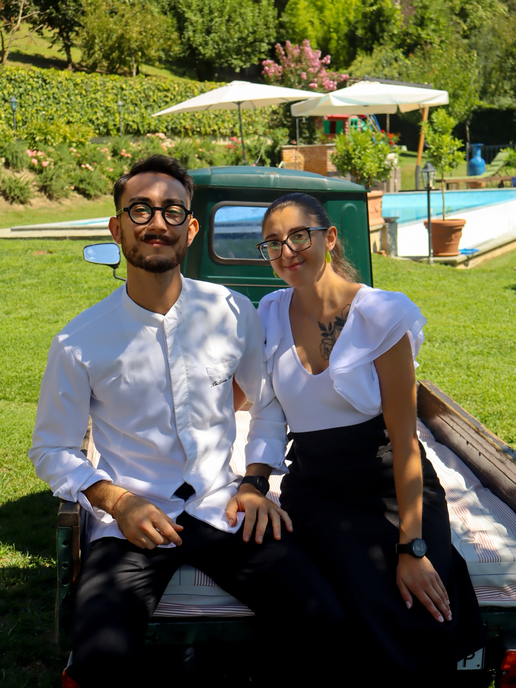

Sara Giordano
Co-founder. Executive Master in CEFF all’Università di Scienze Gastronomiche, e adesso Natural Science. La tavola, i dettagli, il filo tra le cose.

Chi siamo
Due in cucina, una tavola sola. Piccoli e20 è l'experience a domicilio.
Co-founder. Executive Master in CEFF all’Università di Scienze Gastronomiche, e adesso Natural Science. La tavola, i dettagli, il filo tra le cose.
Co-founder. La cucina è la sua parte. Lo trovate anche al Ristorante Nazionale di Vernante, con Uri Sapori Condivisi e al QB Bistro.
Made by Sara e Andrea.